Definición:Es un conjunto de reglas y signos compartidos que permite codificar, transmitir y descifrar un mensaje para que el emisor y el receptor puedan entenderse.
Ejemplo:Las señales de tránsito forman un código compuesto por formas, colores y símbolos bajo un conjunto de reglas compartidas; un círculo rojo con una barra blanca al centro comunica "prohibido el paso", un mensaje que cualquier conductor comprende de inmediato porque conoce el mismo sistema.
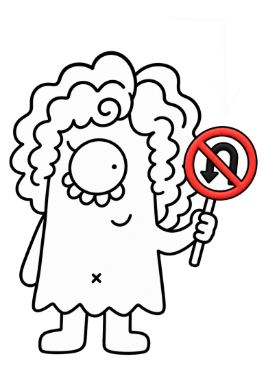
Definición:Es el proceso mediante el cual se transmite e intercambia información, ideas, emociones o conocimientos entre dos o más participantes a través de un código compartido.
Ejemplo:Una llamada telefónica entre dos amigas para coordinar la hora de salida, donde ambas hablan español —el código compartido— y se intercambian de forma fluida el papel de emisor y receptor.
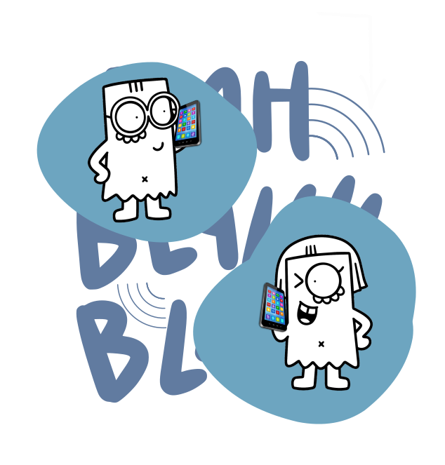
Definición:Es el proceso de transmitir ideas, información o mensajes a través de elementos gráficos e imágenes (como fotografías, ilustraciones, símbolos, colores y tipografías) que se perciben mediante la vista.
Ejemplo:Un cartel de "Prohibido usar celular" con el dibujo del teléfono tachado con una línea roja comunica el mensaje al instante usando solo la vista, sin necesidad de hablar ni escribir explicaciones.

Definición:Es el significado subjetivo, expresivo o secundario que se le atribuye a una palabra, imagen o mensaje según el contexto, la cultura o las emociones, más allá de su sentido literal.
Ejemplo:La palabra "corazón" en una frase como "eres un gran corazón" o una ilustración de un corazón rojo no se refiere al órgano muscular del cuerpo, sino que transmite la idea de amor, bondad y afecto según la cultura y el contexto emocional.
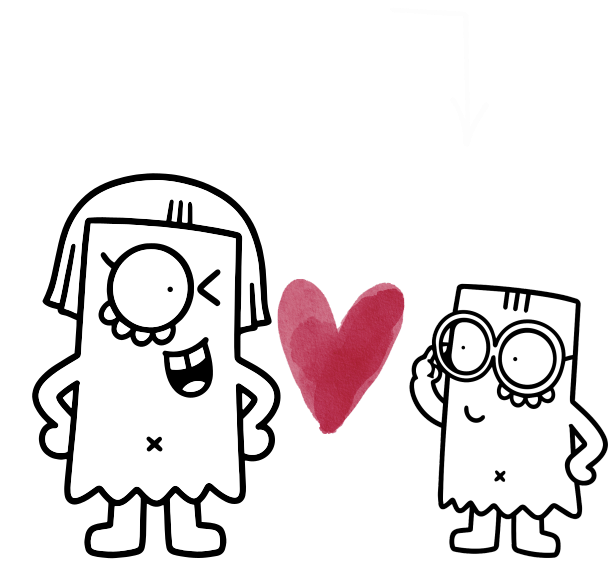
Definición:Es el conjunto de circunstancias (sociales, culturales, históricas, de lugar o de tiempo) que rodean a un hecho, mensaje o signo, y que determinan su verdadero significado o interpretación.
Ejemplo:Levantar el dedo pulgar hacia arriba significa "todo bien" en un partido de fútbol, pero en una antigua arena romana significaba perdonarle la vida a un gladiador; el entorno y la época cambian por completo lo que transmite la misma imagen.
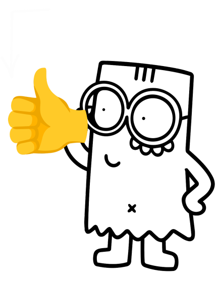
Definición:En una imagen es su significado literal, objetivo y descriptivo. Consiste en nombrar o enumerar únicamente lo que se ve a simple vista, sin incluir interpretaciones, emociones o valores culturales.
Ejemplo:"El corazón bombea sangre a todo el cuerpo." Literal (denotativo): es el significado exacto, objetivo y directo que encuentras en el diccionario —el órgano muscular del sistema circulatorio—, sin metáforas ni dobles sentidos.
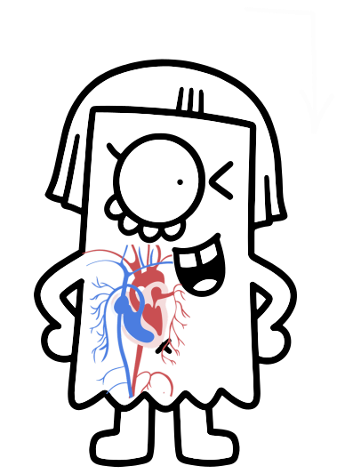
Definición:Es el sujeto, entidad o sistema que origina, codifica y transmite el mensaje con una intención comunicativa concreta hacia uno o varios receptores.
Ejemplo:Un profesor explicando una clase en el aula actúa como el emisor, ya que es la persona que organiza la idea en su mente, la convierte en palabras y transmite la lección a sus estudiantes.
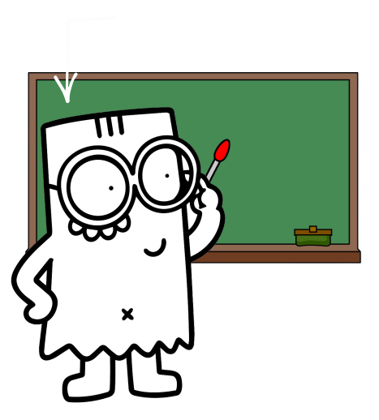
Definición:Es un pequeño ícono o imagen digital que se utiliza en mensajes electrónicos, redes sociales y sitios web para expresar emociones, ideas, objetos o conceptos de forma rápida y visual.
Ejemplo:La carita con lágrimas de risa no expresa dolor o tristeza, sino mucha gracia o diversión, permitiendo transmitir esa emoción de inmediato en un mensaje digital.
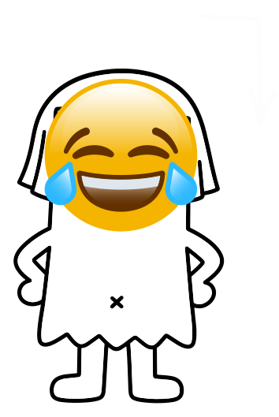
Definición:Es una representación gráfica de una expresión facial creada a partir de la combinación de caracteres tipográficos, como signos de puntuación, letras y números, para transmitir un estado de ánimo o una emoción en la escritura digital.
Ejemplo:La combinación ":-)" o ":)", hecha con dos puntos y un paréntesis, es un emoticono que representa una cara sonriente para transmitir que estás feliz en un mensaje de texto.
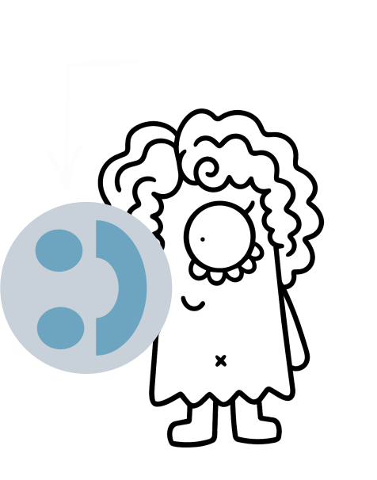
Definición:Es una representación gráfica simple y reconocible que transmite de forma visual un objeto, concepto o acción para comunicar información de manera rápida y eficiente.
Ejemplo:Una manzana es un ícono porque tiene semejanza física con el objeto real: la ves y reconoces de inmediato que es una manzana porque se ve idéntica a una.
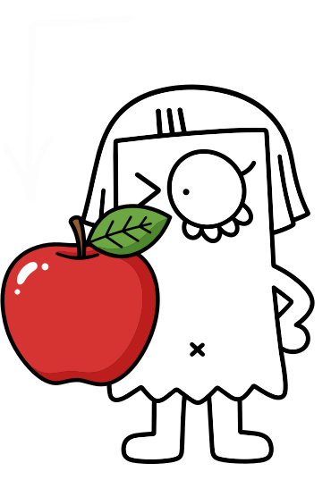
Definición:Es una señal o un signo que muestra, indica o permite conocer la existencia de otra cosa a través de una relación de causa y efecto o de continuidad.
Ejemplo:El humo saliendo de una chimenea es un índice de fuego o combustión, ya que existe una relación física de causa y efecto: el humo no se parece al fuego ni es una convención arbitraria, sino que revela directamente su presencia.
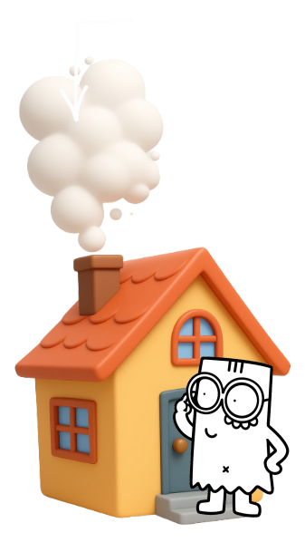
Definición:Es el proceso mental mediante el cual una persona atribuye un significado o sentido determinado a un signo, mensaje, texto, imagen o acontecimiento.
Ejemplo:Al ver a una persona en la calle sosteniendo un paraguas abierto bajo un cielo nublado, la conclusión de que "ya está lloviendo" o "va a caer un fuerte aguacero" no es el paraguas ni la nube en sí, sino el sentido lógico que tu mente le da a esa escena al unir todas las pistas visuales.

Definición:Es el significado o la idea que se forma en la mente de la persona al ver un elemento visual. No es la persona en sí, sino el concepto que despierta un color, una forma o un logotipo.
Ejemplo:Al ver una corona de oro, la idea de "poder, riqueza o realeza" no es el objeto ni el metal en sí, sino el concepto de prestigio y autoridad que se activa inmediatamente en tu mente.
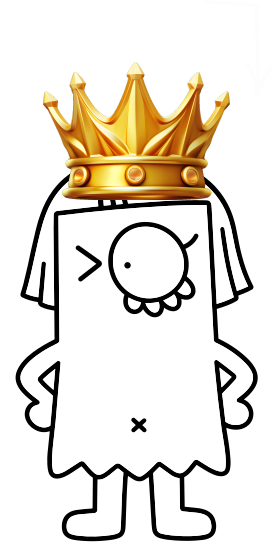
Definición:Es la facultad o capacidad propia del ser humano para expresar pensamientos, emociones e ideas mediante un sistema de signos (orales, escritos o gestuales).
Ejemplo:Un árbitro levantando una tarjeta roja durante un partido de fútbol es un ejemplo de lenguaje, ya que utiliza un signo visual comprendido por todos para expresar la orden de expulsión sin decir una sola palabra.
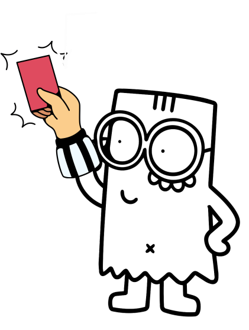
Definición:Es el diseño gráfico que representa la identidad visual de una marca, empresa o persona. Es la imagen o símbolo que permite reconocerla y diferenciarla del resto.
Ejemplo:La palabra "Coca-Cola" escrita en su tipografía cursiva característica. Por qué es un logotipo: porque está compuesto únicamente por texto (letras y tipografía).
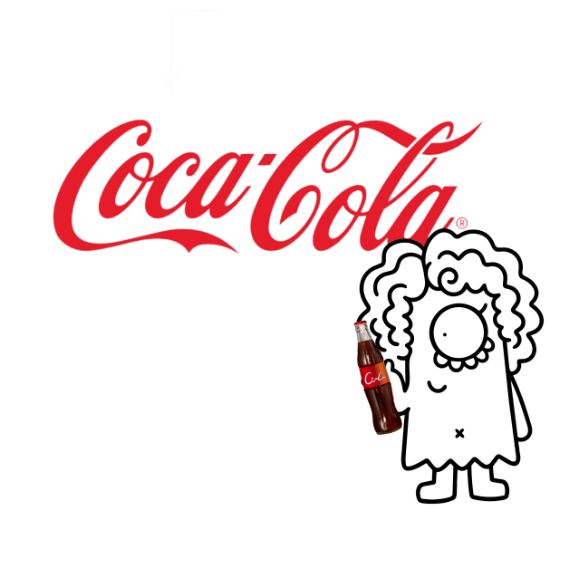
Definición:Es el identificador único (nombre, término, signo, diseño o combinación de ellos) que representa a un producto, servicio, empresa o persona, diferenciándolo de sus competidores en el mercado.
Ejemplo:La palabra "Nike" acompañada de su ícono de flecha (swoosh) no es solo un nombre de calzado, sino que identifica a la empresa y sus productos deportivos, transmitiendo la idea de alto rendimiento y estilo de vida activo para diferenciarse de otras empresas en el mercado.

Definición:Un mensaje es el conjunto de información, ideas, datos o sentimientos que un emisor transmite a un receptor a través de un canal o medio específico.
Ejemplo:Una señal de tránsito con el número "60" dentro de un círculo rojo es el mensaje, ya que contiene la indicación exacta sobre el límite de velocidad permitido que la autoridad vial (emisor) transmite a los conductores (receptores) a través de la placa (canal).
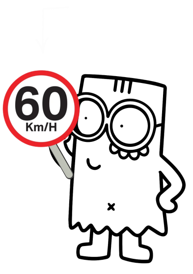
Definición:Es un signo o dibujo figurativo simplificado que representa de forma directa un objeto, concepto, lugar o acción real mediante una imagen esquemática, sin necesidad de utilizar palabras.
Ejemplo:El dibujo de un tenedor y un cuchillo en la carretera o en una plaza de comidas representa directamente un restaurante o zona de alimentos, comunicando el lugar sin necesidad de escribir la palabra.

Definición:Es el individuo, colectivo o sistema que recibe e interpreta el mensaje enviado por el emisor dentro del proceso de comunicación.
Ejemplo:El lector de un libro: procesa las palabras escritas por el autor para comprender la historia.

Definición:Es el objeto, ser, hecho o realidad real o imaginaria a la que alude o remite un signo, una palabra o un mensaje.
Ejemplo:El perro de carne y hueso que ladra en el patio de tu casa no es la palabra "p-e-r-r-o" ni la idea mental que tienes de él, sino el animal real al que remite esa palabra o su foto cuando hablas de él.
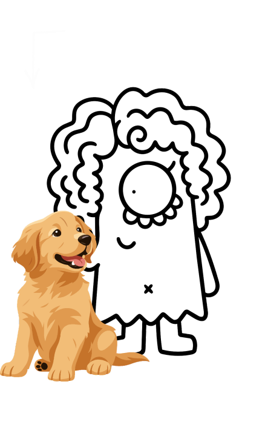
Definición:Es el proceso dinámico mediante el cual un signo adquiere significado para alguien. No es un objeto ni un estado estático, sino una acción o relación triádica donde un elemento remite a otro en la mente de un intérprete.
Ejemplo:
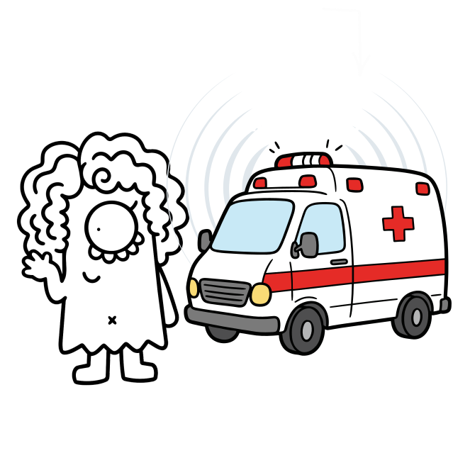
Definición:La semiótica es la ciencia que estudia los signos y la comunicación, analizando cómo creamos e interpretamos el significado de las cosas.
Ejemplo:Un semáforo en rojo puede funcionar como un signo que comunica la acción de detenerse. Es un ejemplo de cómo un elemento visual puede transmitir un significado dentro de un sistema de reglas compartidas.
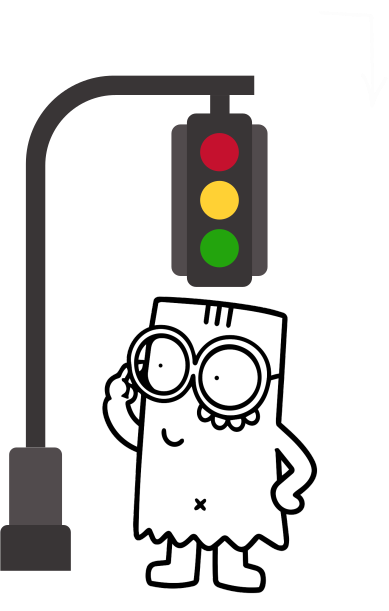
Definición:Es una disciplina del diseño gráfico que sintetiza y organiza símbolos, colores, pictogramas y tipografías para guiar, orientar e informar a las personas dentro de un espacio físico o digital.
Ejemplo:Los letreros de los baños o las flechas de salida en un centro comercial son señales de señalética que te guían de inmediato para saber hacia dónde caminar sin perderte.
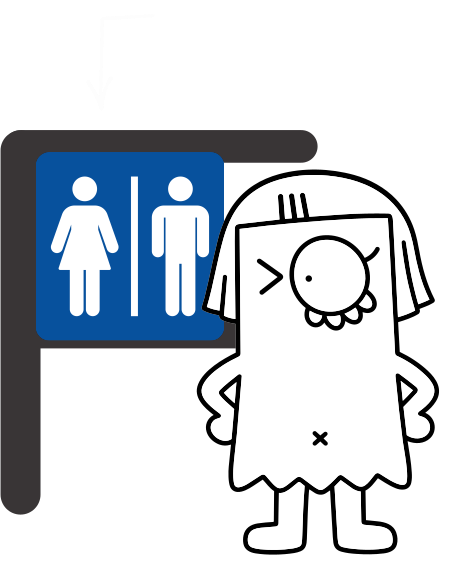
Definición:Es el concepto o la idea mental que nos viene a la cabeza al escuchar o ver algo. Es la representación abstracta de la cosa.
Ejemplo:La idea de un animal doméstico de cuatro patas que ladra y es leal es el significado que se forma en tu mente inmediatamente al ver la foto de un perro o al escuchar su nombre.

Definición:Es la forma material o la huella sonora —sonido, secuencia de letras o imagen— que usamos para expresar esa idea.
Ejemplo:Las cuatro letras P-E-R-R-O escritas con tinta sobre una hoja de papel es la forma visual concreta que tus ojos perciben para identificar ese significante.
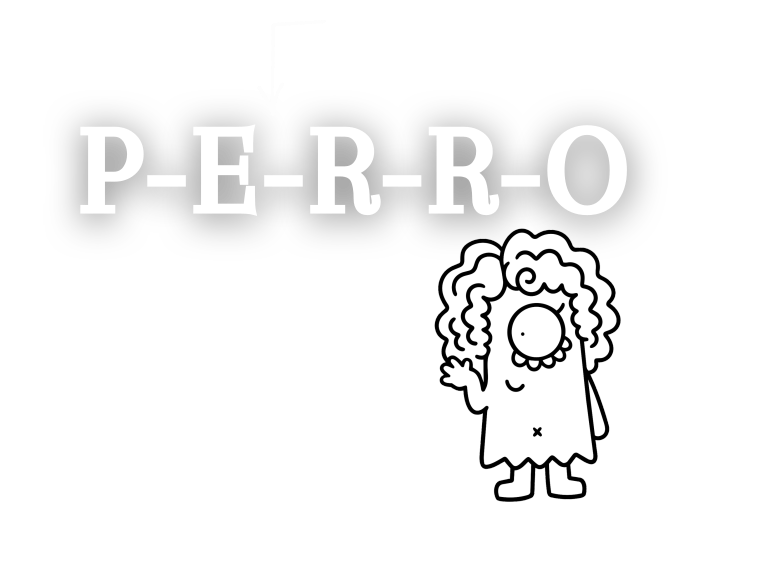
Definición:Un signo es cualquier objeto, imagen, palabra o gesto que representa algo diferente de sí mismo para transmitir una idea o mensaje.
Ejemplo:La palabra "alto" dicha en voz alta o escrita en un letrero funciona como un signo verbal que comunica la instrucción de detenerse, transmitiendo un mensaje directo mediante una regla del idioma español compartida entre el emisor y el receptor.
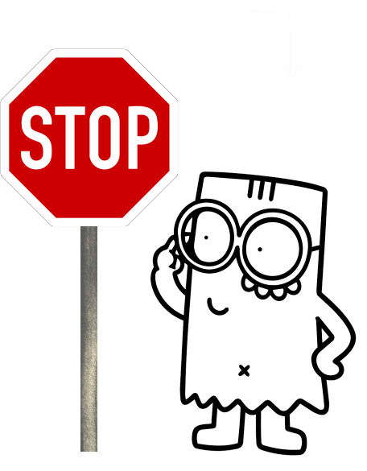
Definición:Es un tipo de signo que representa una idea, un valor o un concepto de forma abstracta, basado en una convención o acuerdo social y no en un parecido físico.
Ejemplo:Una paloma blanca con una rama de olivo en el pico funciona como el símbolo universal de la paz, ya que no existe una relación física directa entre el ave y la paz, sino que la sociedad ha acordado asignarle ese significado abstracto.

Definición:Es un conjunto organizado de elementos (signos) que se relacionan entre sí mediante reglas fijas o convenciones compartidas para transmitir significados y permitir la comunicación.
Ejemplo:El sistema del alfabeto braille es un sistema de signos donde combinaciones específicas de puntos en relieve siguen reglas fijas para representar cada letra del abecedario, permitiendo transmitir y leer mensajes a través del tacto.